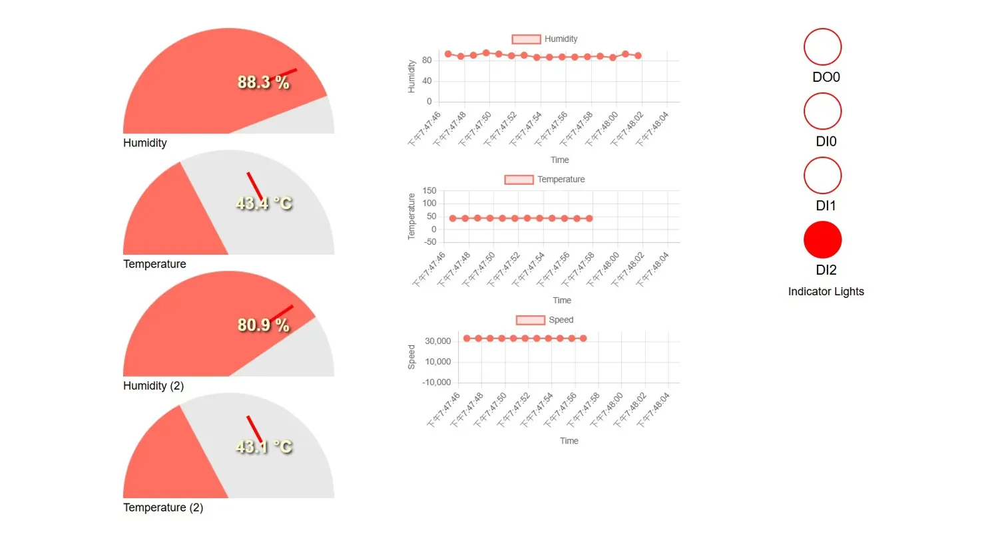
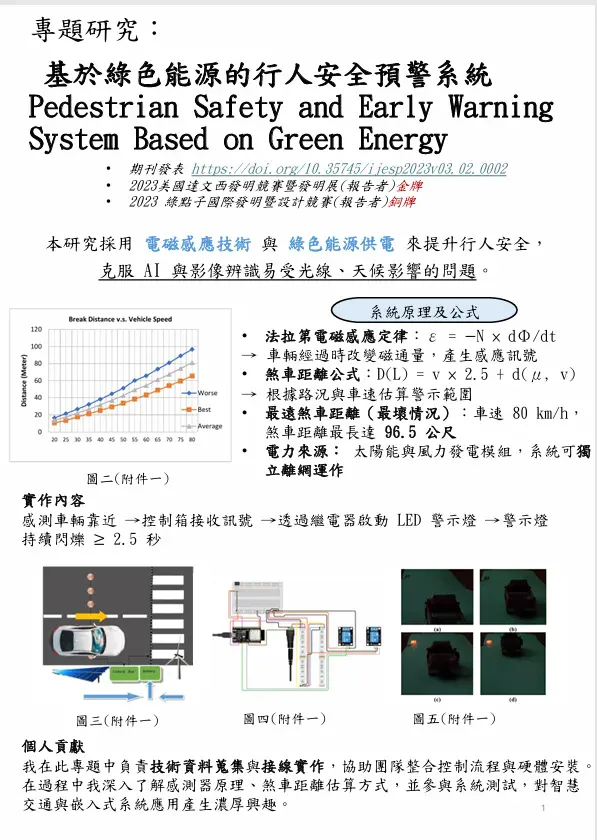

宋沛玲
我是數位創作者 | 網頁開發愛好者
向下滾動探索更多 ↓
關於我的故事
🎓 學習歷程
就讀資訊工程系，對程式設計與網頁開發有濃厚興趣。從基礎的HTML/CSS開始，逐步學習JavaScript、Python等語言。
💻 技術專長
擅長前端開發技術，包括響應式設計、JavaScript互動效果、資料視覺化等。持續學習新技術，追求程式碼的優雅與效能。
🎯 未來目標
致力於成為全端工程師，希望能開發出改變世界的應用程式。積極參與開源專案，與全球開發者交流學習。
我的作品集

IoT環境監控系統
即時監測溫度、濕度與速度數據，搭配視覺化圖表與指示燈狀態顯示。

場地安全管理服務系統
整合ESP32與Docker容器的人臉辨識場地安全管理系統，由簡名伸教授指導。

綠色能源行人安全預警系統
基於太陽能與風力發電的智慧預警系統，使用AI與影像辨識技術提升行人安全。
推薦影片
我最喜歡的影片分享